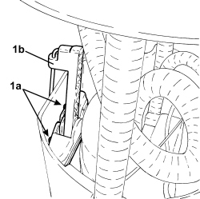
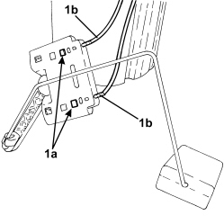

1040A66 FUEL LEVEL GAUGE FOR SUBMERGED PUMP ASSEMBLY - REPLACE.
- Path
- Procedures > 10 ENGINE > 1040 FUEL TANK AND PIPES > 1040A FUEL TANK AND COMPONENTS > 1040A66 FUEL LEVEL GAUGE FOR SUBMERGED PUMP ASSEMBLY - REPLACE.
- Kind
- repair procedure (removal / refitting; the operation number is the code)
- Applies to
- engines: 3.2 JTS; all production periods
- Interactive page
- https://sloeber94.github.io/elrnDB/#/939005262
Applies to: engines: 3.2 JTS; all production periods
 Removing
Removing
 Refitting
RefittingOp. 7050A20 ONE-PIECE REAR SEAT CUSHION - R.R.
Op. 1040A70 SUBMERGED PUMP ASSEMBLY COMPLETE WITH LEVEL GAUGE CONTROL - R + R
1. Compress the retaining clips (1a) and, at the same time, lift the level sensor (1b) out of its housing.

Applies to: engines: 3.2 JTS; all production periods
1. Press the terminals (1a) and remove the wires (1b) from the pins (I) and (III) for the level sensor.

Applies to: engines: 3.2 JTS; all production periods
Refitting
Removing- Connect the wiring to the pins (I) and (III) for the level sensor.
- Place the level sensor in position inside the submerged pump assembly.
- Check that the float moves correctly.
Op. 1040A70 SUBMERGED PUMP ASSEMBLY COMPLETE WITH LEVEL GAUGE CONTROL - R + R
Topics linked from this page (2)
- 1040A70 SUBMERGED PUMP ASSEMBLY COMPLETE WITH LEVEL GAUGE CONTROL - R + R
- 7050A20 ONE-PIECE REAR SEAT CUSHION - R.R.